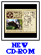

(c) 47k
(c) 47k
The Purcell-Cutts house is an excellent example of the Prairie School style of American architecture. The house is open to the public free of charge on the second Saturday of each month from 10 a.m. to 5 p.m. Docents are available for tours. Call the Visitor Information Center at (612) 870-3131 for reservations. Weekday tours for groups of ten or more can be scheduled by calling the Tour Scheduling Office at (612) 870-3140; admission is $50 for a group of ten to twenty and $100 for a group of twenty-one to fifty.
New CD-ROM "A Prairie School Gem: The virtual tour of the Purcell-Cutts House" for sale in our Museum Shop.